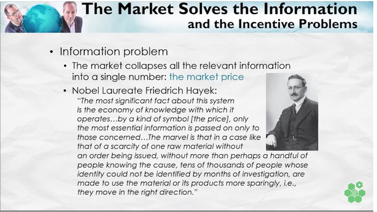

Fredrick Hayek was onto something fundamental in stressing the centrality of information flow to economic functioning. But because his consuming passion was on the (undoubted) evils of Soviet-style central planning, 'the market' always figured as the deus ex machina, a kind of all-purpose get out of jail card for solving the problem of using the knowledge and information distributed throughout the economy. However, the world we encounter defies such simplistic solutions for at least two reasons.[1. Indeed, there are two enduring ironies of Hayek's embrace of markets as paragons of information flow. First, the centrepiece of Hayek's illustration of the 'miracle' of the market is the way in which price information circulates. Yet this is the only information which generally flows properly between buyer and seller because they must agree to it. Beyond that, each party has incentives to mislead them for virtually all other information of import – for instance about the quality of the product or the extent to which buyer or seller can be trusted. Secondly, note that, to the extent the parties cannot suppress it, news of the price they paid circulates as an externality of market trading. Modern technology may improve the scope for concealment of price as for instance in 'dark trading'.]First, although central planning obstructs critical information flows about relative scarcity that markets routinely generate, the conflict of interest between buyers and sellers in a market makes them fertile ground for deception. Just look at the carnival of misinformation in nineteenth-century patent medicine ads to get some idea of what a truly free market in information looks like. So governments stepped in. Today they mandate truthfulness in advertising and the mandatory disclosure of information to consumers and investors and various other safeguards. Yet, as I've been writing about for decades as I'll elaborate below, there are plenty of other ways we could coax more information into the public domain from markets. Second, government could be doing a lot more to improve flows of information and know-how within its bureaucracy and between it and the wider world.
But first let me share a brief, but, I hope enjoyable detour I made the other day when hunting down an excellent 1942 Hayek essay on the evils of scientism.[1. Hayek used the word 'scientism' to refer to the uncritical aping of the methodology of the natural sciences in the social sciences in the hope that this might make them more 'scientific'.] I was intrigued to find an enthusiastic fellow traveller of Hayek's suggesting we dramatically curtail firms' existing private rights and privileges in markets – all in the interests of better information flow. Though I think the specific ideas he proposed are vague and summary, he nevertheless reminds us that there was a time when these ideas were debated on their intellectual merits, rather than according to the cut one's ideological jib. As I'll try to show, we could do with a little more of that today.
From a working-class background, William Harold Hutt found his way to the London School of Economics where Hayek had quite an impact in the 1930s. Hutt's views towards labour unions weren’t so dissimilar to Lord Wellington's – for him unions were just another combine – as illegitimate in helping workers collude against their bosses as business cartels colluding against their customers. He proposed that "the survival of the democratic system may not be dependent upon a general recognition of the illegitimacy of privately motivated coercion in all forms.”
Nevertheless, he argued that there should be no general business "right to privacy" except where it rewarded experimental innovation (which is the economic rationale for patents and copyright):
[I]t is clear that the most efficient conceivable working of society, from the purely administrative point of view, is one in which the privacy or secrecy which surrounds the affairs of " firms " has been overcome. Conventional business secrecy certainly appears to be inimical to the most effective functioning of contemporary institutions. …
To give objective clarity to the assumption let us imagine that auditors declaring profits have become independent State servants, and that, in the endeavour to abolish secrecy, the law has … granted to the public, competitors, co-operant concerns and consumers' organisations the right actually to have access (through expert agents if required) to the accounts of any private undertaking. …
If such reforms were administratively and politically achievable, the social gain which would arise from them is obvious. They would enable entrepreneurs, whether standing in a competitive or in a co-operant relationship to one another, to make their plans and enter into commitments with access to incomparably more complete data.
His goal to promote a 'refashioning of "the framework of the property system … with a view to enabling diffused and decentralised entrepreneurship under conditions of much fuller knowledge" is both intriguing and, it seems to me, correct, at least in principle. To some extent, we've taken his advice concerning publicly listed firms which face onerous disclosure requirements, though most of this is based on investor protection rather than Hutt's more general Hayekian point that freer information flows better inform both producers and consumers enabling generally better decisions by both. On the other hand, the practical question that arises from Hutt's musings is what incentives his proposed regime might unleash – which could degrade the quality of the information being released and push information hoarding into more informal channels. Alas, he doesn't consider this. Nevertheless the whole idea of trying to engineer a knowledge commons that is wider and deeper than the price system seems worthy of consideration.[1.One part of the Toyota productivity miracle was its promotion of a commons of production know-how amongst its suppliers. As I outlined in this post:
In addition to the generous technical support it offered its suppliers, it also sponsored regular supplier wide-open days – both at Toyota and at the supplier factories. Non-cooperation in the knowledge commons was not an option for suppliers wanting to retain Toyota’s patronage. This rapidly normalised the culture of sharing and collaboration both within and between firms within the ‘family’ of suppliers, thus increasing the rate at which successful innovations spread. In the upshot, Toyota’s knowledge and learning commons was instrumental in its often doubling its American competitors’ labour productivity while exceeding their production quality.]It's in that vein that I've proposed a range of initiatives to take advantage of the non-rivalry of information to build new public goods, from public-private digital partnerships in myriad areas to initiating a cooperative search for standards around which those who perform best would have an incentive to publish their own data – for instance their employee engagement data. All of these initiatives would not remove any existing rights from businesses but might nevertheless make possible whole new worlds of transparency and data sharing.
Despite all their talk about innovation, these things are not talked about by senior figures, because … well they're not talked about by senior figures. As Paul Krugman calls them "Very Serious People" have a sense for what's important, and that's defined by what comes up in those conferences on Australia's future prosperity or for even more serious people, at Davos. Naturally enough the passage of these ideas into polite discussion awaits my being awarded a Companion of the Order of Australia (Very Serious Person Division). When that does happen, I will insist that before any traditional initiation ceremonies at Government House, the Governor-General personally open the OvertonWindow and pop them through. Hutt would have well understood the value of the open data agenda for government. And large benefits to our economy and our wellbeing await if we can finally make some real progress, not just by accepting recommendations from the recent Productivity Commission report into data availability and use but by following through on them. (Nearly a decade ago government accepted similar recommendations from the Government 2.0 Taskforce report I chaired but then failed to properly follow through). As the PC's chairman Peter Harris mentions, its report is “something of a new departure” for the PC breaking away from its traditional fondness for property right based solutions in favour of attending to the basic architecture of information flow – as Hutt was proposing for business at large. Let's hope our bureaucracy and their political masters are similarly prepared to address the issues on their practical, rather than their ideological merits.
Finally Hutt puts me in mind of another issue in the way we structure government that has received far less attention than it deserves – the terms on which information and knowledge are generated and used in the public service. We currently have a large number of bodies providing independent information and expertise with a view to that information and expertise being shared publicly. That goes for the Australian Bureau of Statistics, the Bureau of Meteorology, the Productivity Commission and substantial aspects of the job of the Reserve Bank of Australia. And yet most of the government's investment in generating information and expertise is made within departments of state which report to partisan ministers and accordingly keep that knowledge largely confidential from the public. We need to become more intentional about that division of activities within government just as the reform years from around 1980 to 2000 saw us become far more intentional about separately articulating the provision of services from their funding and their regulation. Given the way politics is practised, departments' advice to their political masters as to what they ought do must be confidential if it's to be frank and fearless. But that's no reason for much of the expertise on which that advice is based not to be, in principle, publicly available. We have a fine example of the salutary effect of making authoritative expertise publicly available in the establishment of the Parliamentary Budget Office (PBO).[1. Declaration of interest – my sister-in-law Jenny Wilkinson is the Parliamentary Budget Officer.] The way in which the PBO's expertise on the fiscal impact of different policy alternatives has been made available to different political parties was integral to the last election being the first since the early 1990s where the Opposition wasn't cowed by the imperatives of media management into a 'small target' strategy.[1. In fact, one could buy much of the expertise that the PBO provides from private economic modellers, but this has always been problematic for Oppositions because if Treasury came out with different numbers, the media would decree this to be a 'story'. It's much less so if the Treasury disagrees with the PBO.] This is a small example of a larger theme that I expect many people missed in my proposal for the establishment of an Evaluator General. I proposed an Evaluator General not only to try to dramatically improve the expertise with which evaluations of government programs were conducted. In addition I thought that ultimately everything governments fund should be independently evaluated whether governments of the day like it or not. But I also wanted to better articulate two different streams of the bureaucracy. The first is dedicated to running programs and/or advising ministers on what they ought to do. This remains rightly the province of line departments which deliver their expertise not directly to the public but indirectly through political competition by serving the government of the day (to a considerable extent in confidence). The other stream delivers public goods directly to the public via reporting to Parliament. This stream includes the Auditor General, the Ombudsman, the ABS, the PC and the new PBO. In my model, while line departments continued to advise their ministers about how we ought to proceed, the public could learn in great detail from the Evaluator General and the stream of information available through it, how we're are proceeding. The result would be a deep knowledge commons about what was working well, what wasn't and, as evaluation expertise grew, why and how things might be improved. I think W.H. Hutt would approve.
nothing of importance is discussed at Davos for deliberate reasons: it would embarrass the organisers and the politically powerful people if important things were discussed because it would expose them as fleas on the back of the elephant pretending to understand and direct the elephant. Davos is a prime example of organised bullshit-as-flattery. Much admired and copied.
What you call evaluator general is a bit akin to the 'what works centres' here in the UK. But don't count on them being free of misinformation. The beast is not slayed that easily.
Evaluator is such an ugly word. maybe syndic-general?
But surely the self evident nature of this would at least provide a basis for change.
Thanks Paul,
You are of course right that the beast is not slain that easily. I expect you think it's a hopeless cause to try. I confess you may be right. But I don't think the 'what works' centres are a good comparison.
While I think they are a Good Idea, at least in a world in which academics are simply pumping out learned journal articles, they're in the mould of the 'menu' for policymakers. They're not there to place any constraints on policymakers to generate good evidence and cleave to what evidence there is.
And they're seeking to come up with recipes which are, to a substantial extent context independent, leading to lots of critiques that this is fundamentally misguided.
yes, there is the menu element, and yes, there is the out-of-context problem. But some do try to compare how the current system goes compared to other systems elsewhere and in that sense evaluate the current system (which is not easy to do).
I am not too negative about the information problem in the WW centers. They are an attempt and we'll see how they go. They will likely evolve over time and don't prevent other initiatives from emerging.
btw, a beautiful example of market parties colluding to obscure the price is given by the pharmaceutical benefit scheme. The rebate industry gives is secret, and so are many of the other prices. The government has subverted its own statistical practises (budgets of ministries) to make the deceit possible, ostensibly to be able to negotiate a lower effective price. And the point of keeping the price for medicines secret is exactly your point (and that of Hayek): it would signal to others what they could get the medicines for. So 'we' play beggar-thy-neighbour via secret prices, but other countries do the same.
This is a wider problem than just pharmaceuticals. It's now widespread in government tendering generally. I wonder what its history is – whether it was ever thus, or whether there was a golden age in which such opacity was unthinkable?
Market "information" is a sea of lies and bullshit in which a few truths lie submerged. This has always been so, and has driven the evolution of the human brain towards greater ability to find out the truth, and to lie more convincingly. The evolution of cultures is a different matter. In the struggle for survival between cultures, the one with the most truths, and least lies and bullshit wins. Some of the most important truths are about recognising lies and bullshit, understanding why they will always be there, and increasing the efficiency of the sifting process by which truths emerge. It is evident from the state of Western market capitalism, that some components of our culture are damaging the sifting process. It works quite well in science, so maybe slagging off at science's efforts to throw some light on human nature is the main problem.
Science qualifies as "information", but the cacophony of sellers talking prices up and buyers talking them down does not.
This post is of some relevance to this thread.